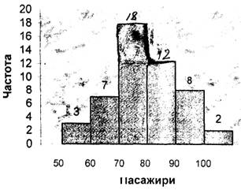
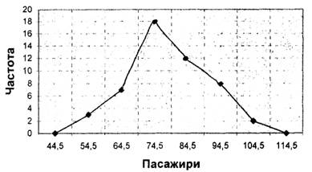

Графічне зображення статистичних розподілів
Графічне зображення статистичних розподілів є іншим способом опису статистичних даних. Завдяки графічному зображенню ми можемо побачити характерні зміни ряду розподілу, не користуючись аналізом цифрових даних.
Гістограма - це один із корисних і найбільш поширених способів опису статистичних даних. Якщо відобразити інтернами частот розподілу на горизонтальній вісі, а частоти на вертикальній, то площа кожного прямокутника пропорційна частоті відповідного інтервалу.
Наприклад, гістограма частот, зображена на Рис. 2, дозволяє помітити такі особливості, які досить складно виявити в неупорядкованому ряду статистичних даних.
Гістограма частот вибіркових даних про кількість пасажирів авіакомпанії

Рисунок 2
Полігон частот виражає розподіл вибіркових даних у вигляді ламаної, що з'єднує середини відповідних класів.
На практиці, за звичай, продовжують зображення ламаної до перетину з горизонтальною віссю у точках, що мають бути серединами класів, що передує першому і замикає останній. Тобто, якщо перший інтервал - (50; 59) пасажирів, то йому буде передувати інтервал з границями 40 та 49, середина якого дорівнює 44.5. Аналогічно, якщо останній клас - (100; 109), то слідує за ним інтервал (110; 119), середина якого дорівнює 114.5 (див. Рис. 3),
Полігон частот вибіркових даних про кількість пасажирів авіакомпанії

Рисунок З